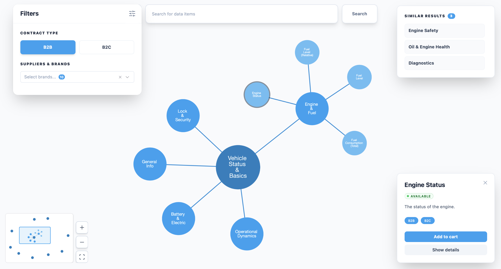
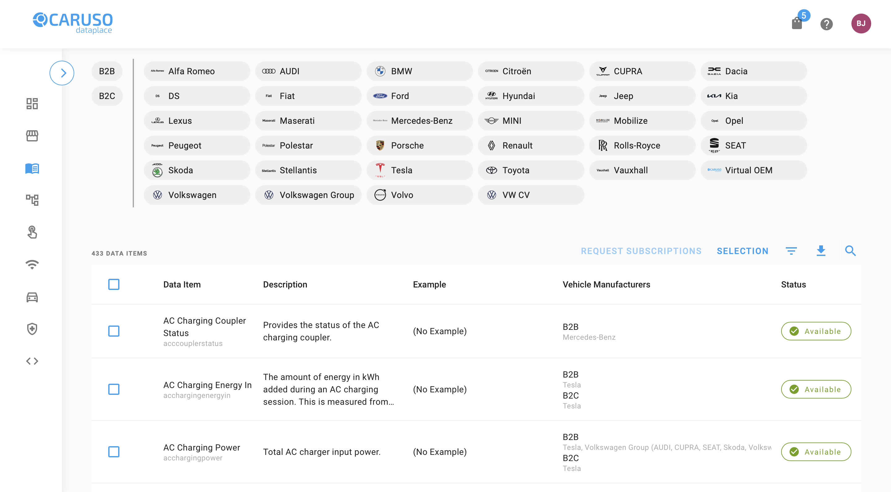
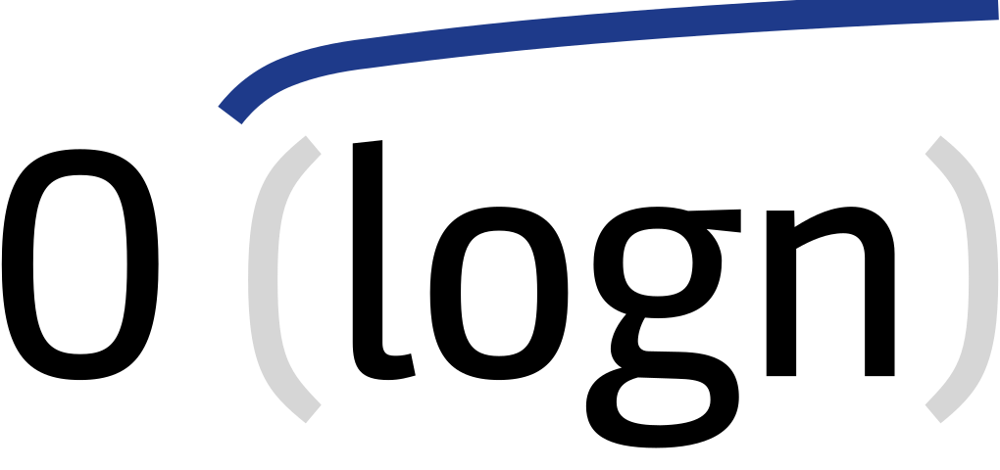
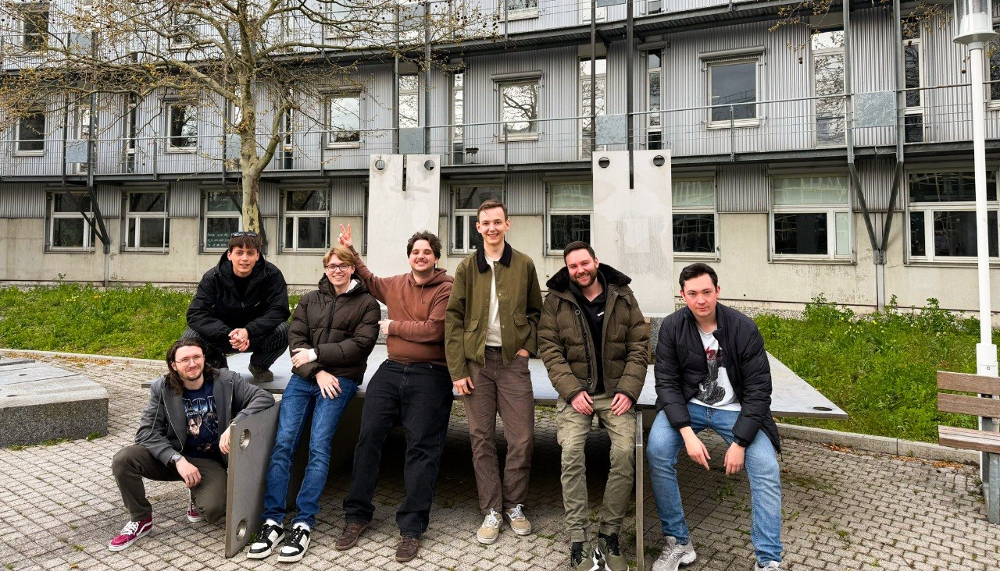

Caruso GmbH macht Mobilitätsdaten zugänglich und nutzbar. Wir haben den Katalog dahinter neu gedacht. Mit KI-Suche, interaktivem Graph View und Echtzeit-Kollaboration.
↑ Jetzt ausprobieren


Eine Plattform, die Nutzern wirklich hilft, die richtigen Daten zu finden, zu verstehen und zu bestellen.
Kein Scrollen durch endlose Listen. Der Katalog öffnet sich als interaktives Netzwerk, verwandte Datenpunkte landen automatisch nah beieinander. Zusammenhänge werden sichtbar, bevor man danach sucht.
Einfach beschreiben, was man braucht. Die KI liefert exakte Treffer mit Begründung und assoziierte Ergebnisse die man sonst übersehen hätte. Im Warenkorb denkt sie weiter und schlägt passende Ergänzungen vor.
Datenpunkte gemeinsam erkunden, favorisieren und direkt in den Warenkorb legen. Alle Teilnehmer sehen denselben Zustand in Echtzeit. Ideal für Teams, die gemeinsam Datenpakete zusammenstellen und abstimmen wollen.
Der Graph View verwandelt den Katalog in ein interaktives Netzwerk. Jeder Datenpunkt ist ein Knoten, gewichtete Kanten zeigen Verwandtschaften, eine Physik-Simulation macht den Graph lebendig und lädt zum Erkunden, Ziehen und Entdecken ein.
Klicken für Vollbild
Kein Dropdown, keine Filter, einfach tippen was man braucht. Eine lokal laufende KI matcht semantisch per RAG über alle Datenpunkte und liefert Treffer mit Begründung, auf Deutsch, Englisch oder Französisch. Im Warenkorb denkt sie weiter und schlägt passende Ergänzungen vor.
Klicken für Vollbild
Session starten, Link teilen, gemeinsam im Graph View erkunden. Alle Teilnehmer sehen denselben Zustand in Echtzeit, synchronisiert über WebSocket. Datenpunkte favorisieren, in den Warenkorb legen und gemeinsam bestellen, alles ohne die Session zu verlassen.
Klicken für Vollbild
Kein langes Suchen. Kein Rätselraten welche Daten passen.
Kein stundenlanges Filtern mehr. Graph View und KI-Suche bringen dich in Sekunden zum richtigen Datenpunkt.
Jeder Treffer kommt mit Begründung. Du siehst nicht nur was passt, sondern auch warum.
Session starten, Link teilen, fertig. Kein Hin-und-Her mehr, alle entscheiden zusammen in Echtzeit.

Fünf Softwareentwickler und zwei Designer der TH Mannheim, als Semesterprojekt für Caruso GmbH.

Team O(log n) · von links nach rechts: Béla, Finn, Marius, Lennart, Paul, Ben, Felix